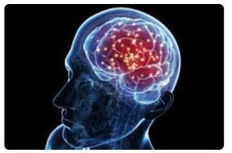
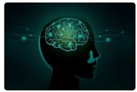
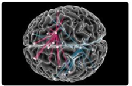

The Human Brain |
|---|
| Discover the complexities of the human brain and its role in behavior, cognition, and health. |
Neuroscience is the scientific study of the nervous system, including the brain, spinal cord, and peripheral nerves. It encompasses a wide range of disciplines, including biology, psychology, and medicine. Understanding brain function is essential for unraveling the mysteries of human behavior, cognition, and emotion.
|  |  |  |
|---|---|---|
Visual representation of brain anatomy and functions. |
The human brain is an incredibly complex organ, consisting of approximately 86 billion neurons that communicate through trillions of synapses. It is responsible for our thoughts, emotions, memories, and movements, making it central to our existence. The brain is divided into various regions, each responsible for specific functions. For instance, the cerebrum, the largest part of the brain, is involved in higher cognitive functions such as reasoning, problem-solving, and decision-making. Meanwhile, the cerebellum plays a critical role in coordinating movement and balance, highlighting the intricate specialization within this remarkable organ.